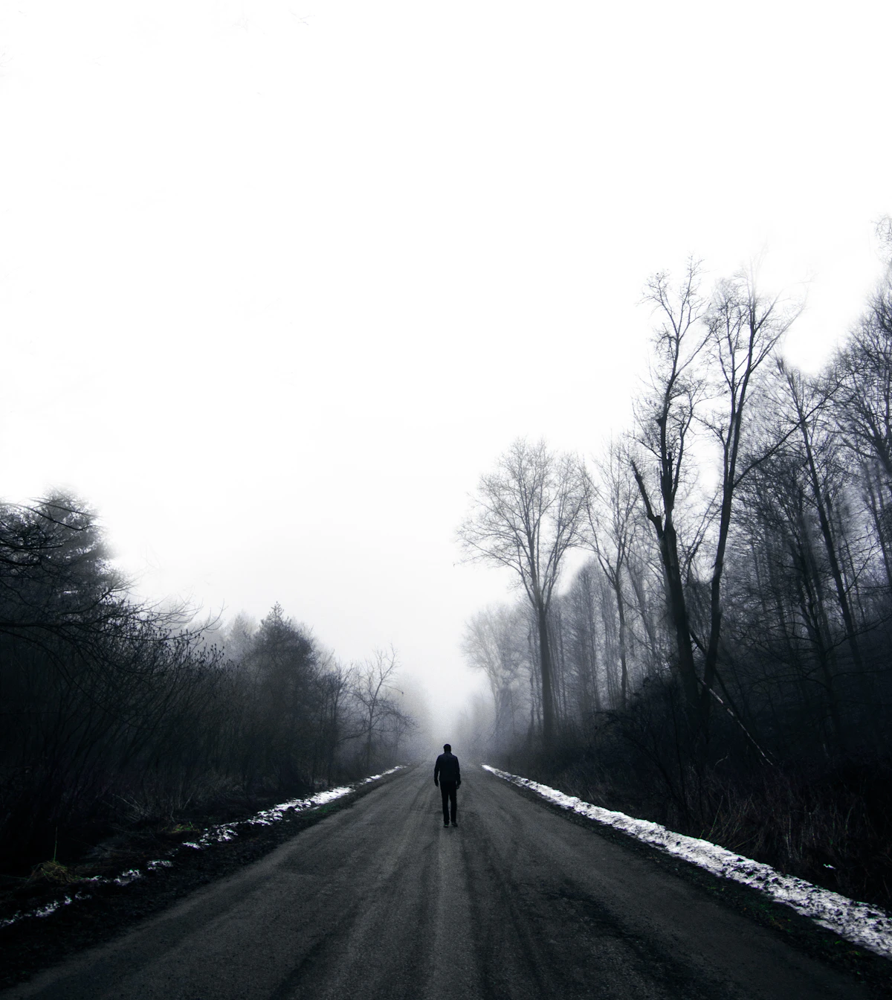

מסע מלא בחו"ל
4 סדנאות לאורך כתשעה חודשים. הסדנה המרכזית מתקיימת שבוע בחו"ל, והשאר בארץ.
כתשעה חודשים
פרויקט מסע שחרור מסייע לחיילים משוחררים, לאחר שירות צבאי שבו נחשפו לאירועי קרב, לעבד את חוויות הלחימה, לרכוש דרכי התמודדות ולהשלים את המעבר לחיים אזרחיים, במגוון התערבויות קבוצתיות ואישיות.

חיילים משוחררים רבים חוו במהלך שירותם אירועים קשים ומשמעותיים. אנו מאמינים כי כפי שהתאמנו יחד ונלחמו יחד, לוחמים זקוקים לעבד את חוויותיהם ביחד.
הפרויקט מקיים מסעות לעיבוד חוויות הלחימה עבור צוותים אורגניים וטיפולים פרטניים, ועוסק בפיתוח ובמחקר של שירותים חדשים עבור חיילים משוחררים המתמודדים עם אירועי השירות.
את הסדנאות מובילים ומנחים עובדים סוציאליים קליניים ופסיכולוגים מצוות מטיב.
במסע בחו"ל הקבוצה מתארחת שבוע אצל קהילה יהודית בעולם, והלינה אצל משפחות מארחות מהקהילה. רוב היום מוקדש לסדנאות משותפות, ושאר הזמן לפעילויות פנאי עם הקהילה.
התוכנית פועלת בשיתוף משרד הביטחון.
4 סדנאות לאורך כתשעה חודשים. הסדנה המרכזית מתקיימת שבוע בחו"ל, והשאר בארץ.
4 סדנאות לאורך כתשעה חודשים. הסדנה המרכזית מתקיימת חמישה ימים במקום מבודד בארץ.
3 סדנאות לאורך כחודשיים. הסדנה המרכזית מתקיימת שלושה ימים במקום מבודד בארץ.
ער"ן, עזרה ראשונה נפשית, זמין בכל שעה. במצב חירום רפואי: מד"א 101.